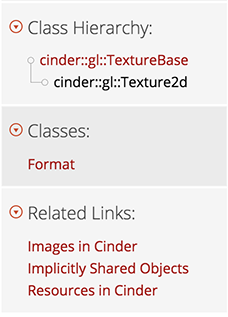

As an open source project, the Cinder community welcomes anyone interested in helping to document the library and/or write guides to help other developers progress their understanding of the library. There are many different ways to contribute to this documentation and this guide is meant to walk through those different avenues. You may want to take a look at the Building Docs guide before reading this one.
Cinder documentation generation is a 2 step approach;
This step uses Doxygen to generate a series of XML files, one for each namespace, class, struct, and interface in the library and a master tag file (cinder.tag) which encapsulates the relationships between all of those files.
The Cinder documentation framework includes a mechanism to add documentation to a class' specific documentation page, as well as a method to easily link to specific pages of the documentation from your HTML files. The integration happens via a Python script, generateDocs.py, that parses all of the information and exports an HTML directory, ready for consumption.
This is a brief overview of the new docs/ directory structure. Names in gray specify dynamically generated files and folders that you won't see unless you generate the docs.
All of the inline comments within the Cinder source code are turned into documentation in the Doxygen export step. For instance, if you open up a header file, you will commonly see block comments above each method that look like this.
[from Surface.h]
/** \brief Constructs asynchronously a Surface from an images located at \a path. The loaded Surface is returned in \a surface.
If you are creating a Surface from an image that is located outside of the WinRT Windows Store App folder, you must use this method.
**/
//! Returns the width of the Surface in pixels
If you choose to contribute to the inline source documentation, a subset of doxygen markdown is supported, including but not limited to:
[The link text](http://example.net/)Note that not If you want to do anything complex, it's highly recommended that you instead contribute to external documentation, as described below.
To write supplemental documentation and guides for the docs, there is a separate process. All external documentation is written in HTML and lives in the htmlsrc/ directory. You can refer to the Docs File Structure for specifics. Unless you are contributing to the overall documentation site markup, you will be mainly concerned with the _docs and guides directories. The _docs directory includes markup and additional assets for class descriptions, while the guides directory includes all of the Cinder guides' markup. Before we go into the specifics of writing each type of external docs, let's look at the <ci> tag.
To assist in bridging the gap between the Cinder source reference pages and the supplemental HTML markup, we've created a special <ci> tag. This tag is used to specify any content within the supplemental documentation HTML that needs to be linked into the source reference, as well as to provide a way for reference pages to link back to our guides.
These are the use-cases for the <ci> tag:
When writing guides, you may frequently want to reference specific source code constructs, such as a class, namespace, function, or enum. Since the docs are dynamically generated it's prohibitive to worry about the specific linkage. The ci tag makes it easy to link to a specific source code reference entry.
For example, if you were writing a guide for FBOs and you wanted to link to Cinder's gl::Fbo class, you could simply write:
An <ci>Fbo</ci> represents an OpenGL Framebuffer Object.
When the file is processed through the docs generation script, it will find and link a tag to the correct HTML file; it converts the Cinder-specific <ci> tag to a standard <a> tag, like so:
An <a href="../../classcinder_1_1gl_1_1_fbo.html">Fbo</a> represents an OpenGL Framebuffer Object.
When using the <ci> tag this way, you can either specifiy the target between the opening and closing tags like this:
<ci>Fbo</ci>
or if you want to link to it using a different label than the one given, you can use the "dox" attribute:
<ci dox="Fbo">This is an Fbo</ci>
In some cases it may be necessary to avoid ambiguity by offering the fully qualified symbol name (including its namespace):
<ci dox="ci::gl::Fbo">This is an Fbo</ci>
Take a look at this test file to see a list of different combinations.
To avoid polluting the Cinder library header files, you can write additional class descriptions in a separate HTML file and have it injected into the actual class' description. We do this by placing all of your content into a ci tag, giving it an attribute of prefix and setting the dox attribute to the class that you are documenting.
<ci prefix dox="cinder::Fbo">
<p>FBOs are used for doing off-screen rendering ...</p>
<!-- continue writing content here -->
</ci>
We've also made it easy to link your guides from relevant classes. For instance, the guide for using images in Cinder discusses gl::Textures, Surfaces, and Channels. To associate that guide to those specific class pages, all you need to do is add these ci tags with a seealso attribute to the HTML page head:
<head>
...
<ci seealso dox="ci::Surface" label="Images in Cinder"></ci>
<ci seealso dox="cinder::ChannelT" label="Images in Cinder"></ci>
<ci seealso dox="cinder::gl::Texture2d" label="Images in Cinder"></ci>
...
</head>
If you want your guide to link from all classes in a namespace, you can simply specify the just the namespace. This is useful for broad guides pertaining to bigger topics, like audio.
<head> ... <ci seealso dox="cinder::audio" label="Audio in Cinder"></ci> ... </head>Once those specific class reference pages are generated, a link to the guide will appear in the class detail side bar under "Related Links". 
To write a guide to be included in the Cinder documentation, follow these steps:
<ci> seealso tags to classes that may be relevant (This can also be part of the config for multiple pages).For your convenience, you can optionally include a config.json file for if your guide has multiple pages. This file allows you to specify the pages in your guide for subnavigation, specify meta keywords for every page in your guide, rather than specifying these for each individual page.
This is an example taken from the Path2d guide:
{
"data":{
// keywords for finding this guide via search
"metadata":
{
"keywords": ["path2d", "shape2d", "bezier", "curves", "path", "lines"]
},
// subnavigation for every page of the guide
"subnav":[
{
"label": "Part 1", // label for the subnav link
"link": "part1.html" // link for the subnav link
},
{
"label": "Part 2",
"link": "part2.html"
},
{
"label": "Part 3",
"link": "part3.html"
}
],
"seealso":
{
"label": "Path2d Guide", // label for the seealso link(s)
"dox": ["ci::Path2d", "ci::Shape2d"] // classes to be linked from
}
}
}
For code blocks, we use the Prism syntax highlighter. It allows you to style your code blocks based on their language. This is the proper markup for Cinder C++ code blocks:
<pre><code>
//... write some code here to be highlighted
</code></pre>
By default, C++ is the specified language for code blocks. If you want to override that, you can use one of the following supported language classes:
language-c++ (default)language-markup For HTML and XMLlanguage-bashlanguage-javascript For JavaScript and JSONlanguage-pythonYou can write inline HTML code by using the <code> tag by itself:
<code>gl::ScopedGlslProg</code> is a scoped glsl shader.
In addition to any styles included in the Foundation 5 framework, there are a few classes that may be commonly used when writing documentation, which can be found in stylesrc/stylus/helpers.styl:
.center for centering images.shadow for adding a consistent drop-shadow throughout the guides.rounded for adding rounded corners to images (best for application windows)We encourage you to use whatever web technologies that will make your documentation as helpful as possible, including the use of WebGL. To do so, you should be able to write your WebGL sample entirely in a separate file and save in the same guide directory. Then you can embed your sample into an iFrame. All assets within the guide's directory will be copied over.
This is all you have to do to embed a WebGL iFrame into your markup:
<iframe src="cube.html" width="640" height="400" frameborder=0></iframe>
Note: Due to file system security measures, WebGL samples that rely on asset loading will not show up when viewing your guide via the file system. You will have to spin up a local server to view it, which should be pretty common if you are writing WebGL in the first place.
Generating all of the docs takes a few minutes, which can be a hassle when testing out a specific guide. Here are a few tips for running generateDocs.py
Running the default script by default generates every page of the documentation. Run it like so:
python generateDocs.py
You can run the generator on a specific file by passing the source file as the first argument:
python generateDocs.py htmlsrc/index.html
To regenerate a specific directory of files (such as a suite of guides that live in the same directory), you can specify the directory that you want processed:
python generateDocs.py htmlsrc/guides/opengl/
When generating a source file documentation page, by default, all of the html files will be generated so that the script can link up referenced pages. To skip over that step, you can use the -s flag.
python generateDocs.py xml/namespacecinder.xml -s
By default, debug log messages are ignored. To view all logging messages, the -d flag can be useful for debgging errors:
python generateDocs.py -d